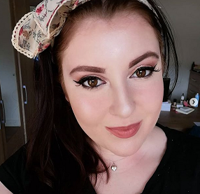

Welkom bij Jess does make up beauty
Jess does make up beauty is een Make-up artist gevestigd in Nijmegen. Jess does make up beauty verzorgt visagie voor onder andere: fotoshoots, bruiloften, theater en evenementen.
Neem gerust een kijkje op de website en op onze andere social media kanalen. U vindt ons op facebook ( https://www.facebook.com/Jess-does-make-up-beauty) en op instagram ( https://www.instagram.com/jessdoesmakeupbeauty/ ). Bij interesse of voor meer informatie over onze services, kunt u altijd een bericht sturen. Dit kan via al onze social media kanalen en onderaan deze pagina.
CORONA: Wij bij jess does make up beauty hebben de nodige maatregelen genomen om ook tijdens de corona pandemie veilig en schoon te werken. De maatregelen die wij nemen zijn onder andere: Werken met een mondkapje op, alle producten worden met alcohol gedesinfecteerd, wij raken zo min mogelijk het gezicht aan en er wordt gebruik gemaakt van disposable kwastjes voor onder andere de lippen en de wimpers.


Over het bedrijf en Jess
Jess does make up beauty is een jong bedrijf opgericht door Jess in 2020.
Al heel haar leven heeft Jess een grote interesse gehad in alles make-up, beauty en creativiteit. Als kind speelde ze maar al te graag met de make-up van haar moeder. Later is ze haar passie helemaal gaan ontwikkelen en ontdekken. Zo heeft ze tijdens haar opleiding tot drama therapeute een cursus theater make-up gevolgd waarna ze besloot om zich volledig op make-up te focussen. In januari 2019 is Jess begonnen aan een opleiding visagie + bij DE visagieschool in Nijmegen.
Jess werkt heel graag met allerlei soorten mensen en staat altijd open voor de gekste ideeën. Jess werkt professioneel en snel maar vindt het ook belangrijk dat er een gezellige en goede sfeer is. Jess staat daarnaast ook voor positiviteit en inclusiviteit. Iedereen is welkom en belangrijk bij Jess does make up beauty, zo werkt Jess graag met verschillende huidskleuren en genderidentiteiten. Kortom bij Jess does make up beauty geloven wij dat make up voor écht iedereen is.
Voor meer informatie over onze services, prijzen of extra informatie, kunt u met het contact formulier hiernaast een bericht sturen.
Wij proberen altijd zo snel mogelijk een antwoord te geven op uw vragen!